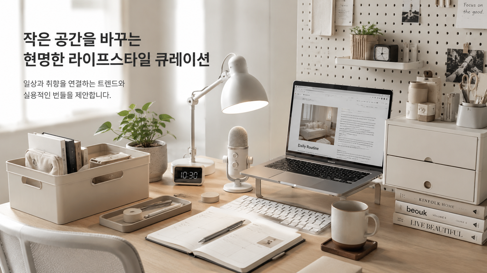

스마트폰 알림 줄이기 설정 비교

집중력을 무너뜨리는 가장 흔한 원인 중 하나는 알림입니다. 하지만 모든 알림을 다 끄는 방식이 항상 정답은 아닙니다. 이 글은 현실적으로 유지하기 쉬운 알림 줄이기 설정법을 비교합니다.
핵심 정리
이 글은 단순 추천이 아니라, 왜 이 주제가 요즘 관심을 받는지와 실제 사용 관점에서 무엇을 먼저 바꾸면 좋은지 정리한 글입니다.
추천 우선순위
- 지금 가장 불편한 문제와 직접 연결되는지 확인
- 매일 반복해서 사용할 가능성이 높은지 확인
- 이미 가진 것과 조합해서 바로 실행 가능한지 확인
왜 지금 이 주제가 뜨는가
- 메신저·커머스·숏폼 앱이 동시에 늘어나면서 알림 피로가 커지고 있습니다.
- 생산성보다 디지털 웰빙이 중요한 키워드로 자리 잡으면서 “필요한 것만 남기기” 방식이 주목받습니다.
- 많은 사람이 앱 삭제보다 알림 정리부터 더 쉽게 시작할 수 있습니다.
실사용 관점 리뷰
실사용 관점에서 가장 유지하기 쉬운 방식은 “필수 연락 / 일정 / 결제”만 남기고 나머지는 배지·배너·소리 순서로 줄이는 것입니다. 한 번에 다 끄면 오히려 불안감 때문에 다시 켜는 경우가 많습니다.
또 하나는 알림이 오는 앱보다, 내가 습관적으로 확인하는 앱을 먼저 찾는 것입니다. 실제 집중 방해는 알림보다 습관적 확인에서 더 크게 오는 경우가 많습니다.
비교해서 보면 좋은 포인트
| 구분 | 우선 확인할 점 | 추천 방향 |
|---|---|---|
| 완전 차단 | 지금 방해가 너무 심한가 | 짧게 리셋용으로 사용 |
| 부분 차단 | 필요한 연락은 유지해야 하는가 | 가장 현실적인 기본형 |
| 시간대 제한 | 퇴근 후나 수면 전이 문제인가 | 시간대별 집중 모드 활용 |
사지 않아도 되는 경우
- 중요 연락을 놓치면 업무 문제가 생기는 경우
- 한 번에 너무 과하게 바꿔 불편감이 큰 경우
- 알림보다 실제 사용 습관이 더 큰 문제인 경우
쇼츠 연결 아이디어
- 알림 3단계 줄이기 화면 녹화 영상
- 퇴근 후 집중 모드 전환 과정을 보여주는 영상
- 가장 많이 오는 알림 TOP3를 줄이는 비교 영상
관련 글 연결
구매 전 비교 박스
아래 항목은 바로 구매를 유도하기보다, 내 상황에 필요한지 먼저 판단하기 위한 비교 기준입니다. 실제 쿠팡파트너스 링크는 추후 본인의 링크로 교체하면 됩니다.
이 페이지는 쿠팡파트너스 링크를 포함할 수 있으며, 구매 전에는 가격·후기·설치 조건·사용 빈도를 직접 확인하는 것을 권장합니다.
이 페이지는 제휴 링크를 포함할 수 있으며, 실제 구매 전에는 본인의 공간·예산·사용 빈도를 먼저 확인하는 것을 권장합니다.